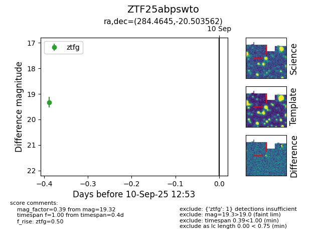

FINK: ZTF25abpswto
Lasair: ZTF25abpswto
ALeRCE: ZTF25abpswto
ZTF25abpswto (ztf,fink)
equatorial (ra, dec) = (284.4645,-20.50356)
galactic (l, b) = (15.1784,-10.54828)

last atlaso=19.14, ztfg=19.32
1 atlaso, 1 ztfg detections